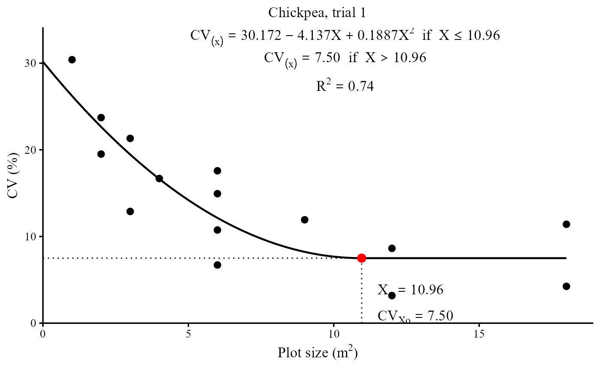
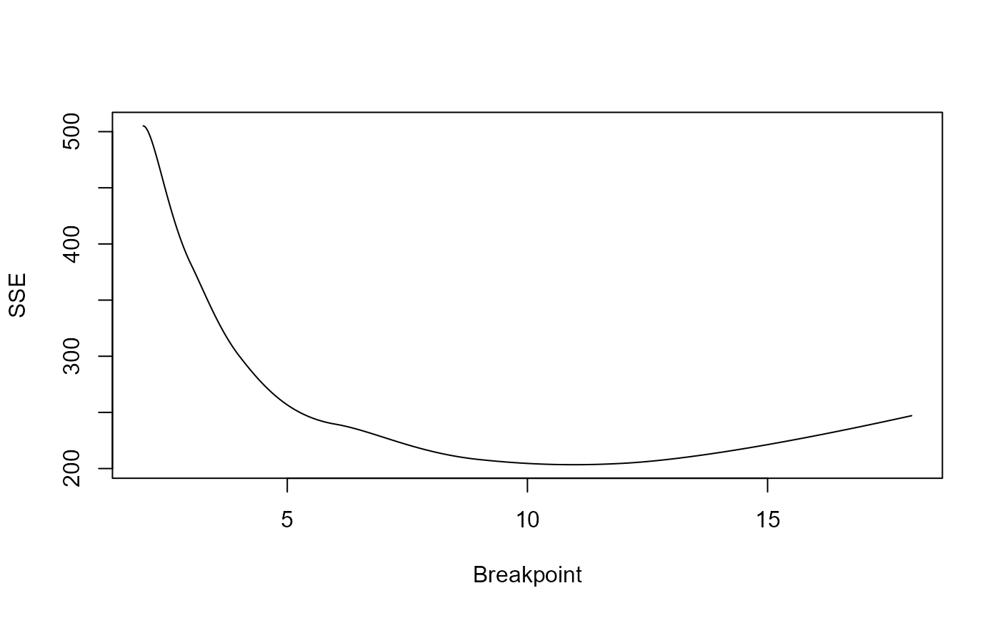

fit_qrp.RdFits the quadratic-plateau (smooth broken-line) model $$f(x) = a + b x + c x^2 \ \text{ if } x \le X_0, \qquad f(x) = a - b^2/(4c) \ \text{ if } x > X_0,$$ with \(X_0 = -b/(2c)\). The breakpoint is profiled over a grid: for each candidate \(X_0\) the model is linear in the plateau level and the curvature, so it is fit by least squares with no starting values, and the \(X_0\) minimizing the residual sum of squares is returned. This mirrors [fit_lrp()] and avoids the convergence problems of a direct nls fit.
fit_qrp(
.data = NULL,
x = NULL,
cv = NULL,
trial = NULL,
step = 0.001,
search_range = NULL,
start = NULL,
local_min_tol = 0.1,
bootstrap = FALSE,
n_boot = 1000,
conf_level = 0.95,
weights = FALSE
)optional data frame; when supplied, x/cv/trial
are column names.
numeric vectors, or column names when .data is a data frame.
optional column name identifying the trial.
grid step for the breakpoint search (default 0.001).
optional c(lower, upper) restricting the breakpoint
search; must fall within the data range.
optional single breakpoint value. The fit is unchanged, but the
result also carries $compat: the local minimum of the basin
containing start, i.e. what a gradient-based fitter seeded there
would return. Rarely needed for the QRP, whose SSE profile is usually a
single smooth basin.
relative SSE tolerance (default 0.10) deciding which
local minima count as competing. Only labelling is affected (the
competing column of $local_minima and the stars in
print()); the fit never changes, and no warning is issued.
logical; if TRUE, also estimate the uncertainty of
the breakpoint by resampling (default FALSE). See the section
"Uncertainty of the breakpoint".
number of bootstrap resamples (default 1000), used only when
bootstrap = TRUE.
confidence level of the percentile interval (default 0.95),
used only when bootstrap = TRUE.
weights for a weighted least-squares fit. FALSE
(default) fits unweighted, as the published procedure does. TRUE
uses the n column of .data (the number of plots behind each
CV, as returned by [calc_cv_shapes()]); a column name or a numeric vector
are also accepted. The caveats are the same as for [fit_lrp()]: the
breakpoint typically falls, the points remain dependent, and the weighted
fit statistics are not comparable with the unweighted ones.
A "qrp_fit" (single series) or "qrp_multi" (per trial).
The fit also carries local_minima (competing basins with their SSE
excess over the optimum and a competing flag, or NULL),
local_min_tol, sse_profile,
compat when start was given, and bootstrap when
bootstrap = TRUE (a list with ci, se, p_value,
statistic, replicates, n_valid, conf_level and
null_model). Because the quadratic-plateau
joins smoothly, this profile is typically a single basin, unlike the
stepped profile of [fit_lrp()].
fit_qrp(x, cv) returns a "qrp_fit".
fit_qrp(.data, x = "x", cv = "cv", trial = "trial");
with trial, one model per trial is fit and a "qrp_multi"
object is returned. Column names default to "x", "cv", "trial".
bootstrap = TRUE resamples the shapes (the rows of the CV table) with
replacement, refits on each resample, and returns a percentile interval for
\(X_o\) in $bootstrap$ci, together with a bootstrap standard error.
It also tests whether the plateau is warranted. The null here is not the one used by [fit_lrp()]: a quadratic-plateau that never plateaus is simply a quadratic, so the null model is the unconstrained quadratic fitted on every observation, and the p-value is the proportion of null resamples whose SSE reduction matches or exceeds the observed one. A large p-value means the plateau segment buys nothing over a plain quadratic, and \(X_o\) should not be read as an optimal plot size.
Set the random seed before calling to make the result reproducible.
[fit_lrp()], [plot.qrp_fit()]
## Chickpea uniformity trial, trial 1 (Cargnelutti Filho et al., 2025)
X <- c(1, 2, 2, 3, 3, 4, 6, 6, 6, 6, 9, 12, 12, 18, 18)
CV1 <- c(30.40, 19.51, 23.72, 12.89, 21.32, 16.69, 6.71, 10.75,
17.58, 14.94, 11.93, 3.18, 8.63, 4.25, 11.41)
## A coarse grid runs fast; the default step = 0.001 refines the third decimal
fit <- fit_qrp(X, CV1, step = 0.01)
fit
#> Quadratic Response Plateau (QRP) fit
#> Breakpoint (Xo): 10.960
#> CV at breakpoint: 7.502
#> R2: 0.741 R2 adj: 0.697 RMSE: 3.683 MAE: 3.216
## The quadratic joins its plateau smoothly, so the optimum is larger than
## the one the broken-line model gives on the same data
coef(fit)
#> a b c
#> 30.1721648 -4.1368881 0.1887266
predict(fit, newx = c(2, 5, 7.5, 15))
#> [1] 22.653295 14.205891 9.761378 7.502018
# \donttest{
## Full precision (about eight times slower)
fit_qrp(X, CV1)$parameters["Breakpoint"]
#> Breakpoint
#> 10.965
plot(fit, title = "Chickpea, trial 1")

## The smooth join makes the SSE profile a single basin, unlike the stepped
## profile of fit_lrp(): competing minima are rare and much worse.
plot(fit$sse_profile, type = "l", xlab = "Breakpoint", ylab = "SSE")

fit$local_minima
#> NULL
## Uncertainty of Xo, off by default. The p-value asks whether the plateau
## buys anything over a plain quadratic.
set.seed(1)
unc <- fit_qrp(X, CV1, step = 0.01, bootstrap = TRUE, n_boot = 500)
unc
#> Quadratic Response Plateau (QRP) fit
#> Breakpoint (Xo): 10.960
#> 95% CI (percentile): [4.222, 18.000] SE 4.141
#> plateau vs quadratic: p = 0.2575 (500 resamples)
#> CV at breakpoint: 7.502
#> R2: 0.741 R2 adj: 0.697 RMSE: 3.683 MAE: 3.216
unc$bootstrap$ci
#> [1] 4.222 18.000
## Restrict the breakpoint search
fit_qrp(X, CV1, step = 0.01, search_range = c(5, 15))$parameters["Breakpoint"]
#> Breakpoint
#> 10.96
## One model per trial, with a summary table
trials <- rbind(
data.frame(x = X, cv = CV1, trial = "T1"),
data.frame(x = X, cv = CV1 * 0.85, trial = "T2")
)
fit_qrp(trials, x = "x", cv = "cv", trial = "trial", step = 0.01)$summary
#> Using x = 'x', cv = 'cv', trial = 'trial' -> 2 trials.
#> trial a b c breakpoint plateau R2 RMSE AIC BIC
#> 1 T1 30.1722 -4.1369 0.1887 10.96 7.5020 0.7406 3.6827 89.677 92.510
#> 2 T2 25.6463 -3.5164 0.1604 10.96 6.3767 0.7406 3.1303 84.802 87.634
#> n_local
#> 1 0
#> 2 0
# }